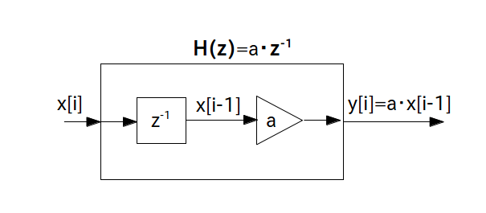
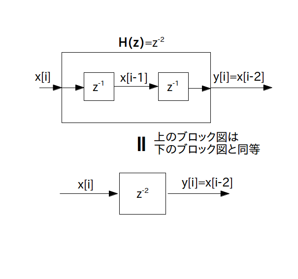
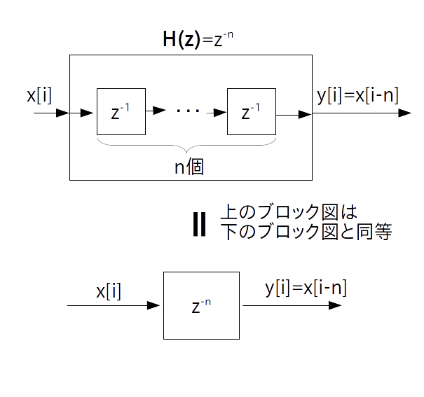
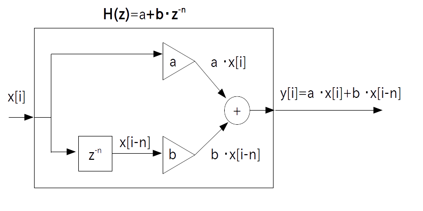
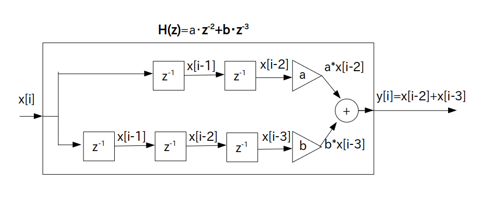
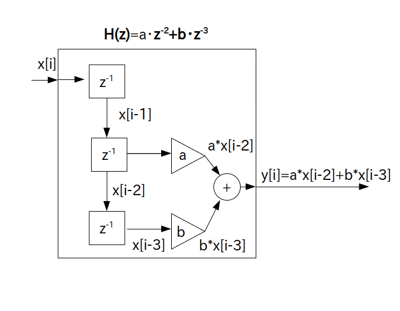
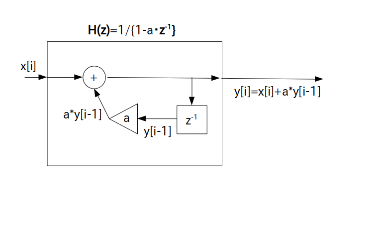

フィルタの直列結合、並列結合、フィードバック機構について学びましたので、いよいよ基本パーツを使って複雑な伝達関数を持つフィルタのブロック図を描けるようになりました。
ここでは伝達関数→ブロック図の変換例をいくつか紹介したいと思います。
またそのプログラム表現についても紹介します。
という伝達関数を持つフィルタは乗算器 $\textrm{H}_1(z) = a$ と乗算器 $\textrm{H}_2(z) = b$ の直列結合と考えられますので結局乗算器 1 つだけのブロック図に変わります。
この時のブロック図は次の通りです。
プログラム表現は次の通りです。
y[i] = (a * b) * x[i]
という伝達関数を持つフィルタは乗算器 $\textrm{H}_1(z) = a$ と 1 時刻遅延素子 $\textrm{H}_2(z) = z^{-1}$ の直列結合と考えられます
この時のブロック図は次の通りです。
なお一般的に乗算器は遅延素子の後に置くことが多いのでこの図では乗算器と遅延素子の順番を入れ替えています(もちろん乗算器→遅延素子の順でも問題ないです)。

プログラム表現は次の通りです。
y[i] = a * x[i-1]
という伝達関数を持つフィルタは 1時刻遅延素子 $\textrm{H}_1(z) = z^{-1}$ と 1 時刻遅延素子 $\textrm{H}_2(z) = z^{-1}$ の直列結合と考えられますが、これを $z$ の項でまとめると伝達関数は
\begin{align*} \textrm{H}(z) = z^{-2} \end{align*}となります。
この伝達関数を持つフィルタを「2 時刻遅延素子」と呼び、入力が 2 時刻遅れて出てくるフィルタになります。
2時刻遅延素子の時のブロック図は次の通りです。

プログラム表現は次の通りです。
y[i] = x[i-2]
同様に遅延素子を $n$ 個の 1 時刻遅延素子を直列結合することで「$n$ 時刻遅延素子」を作ることが出来ます。
伝達関数は次の通りです。
ブロック図は次の通りです。

プログラム表現は次の通りです。
y[i] = x[i-n]
という伝達関数を持つフィルタは乗算器 $\textrm{H}_1(z) = a$ と 乗算器 $b$ と $n$ 時刻遅延素子 $z^{-n}$ を直列結合した $\textrm{H}_2(z) = b \cdot z^{-n}$ の並列結合と考えられます
この時のブロック図は次の通りです。
$\textrm{H}_1(z) = a$ と $\textrm{H}_2(z) = b \cdot z^{-n}$ が加算器で結合されています。

プログラム表現は次の通りです。
y[i] = a * x[i] + b * x[i-n]
という伝達関数を持つフィルタは 2 時刻遅延素子 $\textrm{H}_1(z) = z^{-2}$ と 3 時刻遅延素子 $\textrm{H}_2(z) = z^{-3}$ の並列結合と考えられます
この時のブロック図を素直に描くと次の通りになります。
$\textrm{H}_1(z) = z^{-2}$ と $\textrm{H}_2(z) = z^{-3}$ が加算器で結合されています。

ただし、このままだと遅延素子が無駄に多く含まれていてもったいないので、遅延素子を一部共通化して次の様なブロック図にします。

プログラム表現は次の通りです。
y[i] = x[i-2] + x[i-3]
という伝達関数を持つフィルタは例2で考えたフィルタをフィードバック機構の $\textrm{H}_1(z)$ にしたフィルタであると考えられます。
従ってブロック図は次の通りになります。

プログラム表現は次の通りです。
y[i] = x[i] + a * y[i-1]